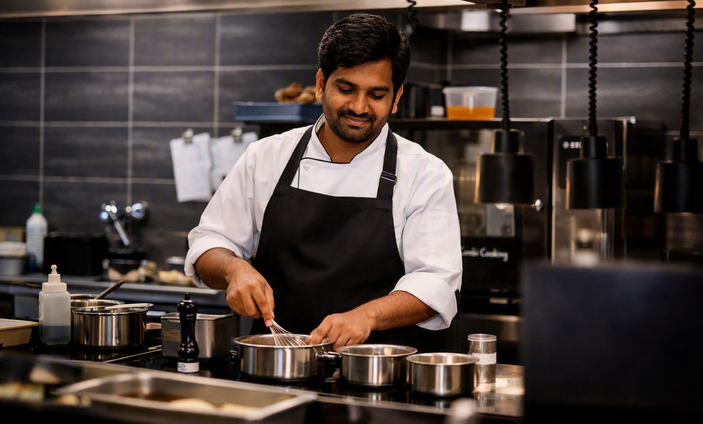
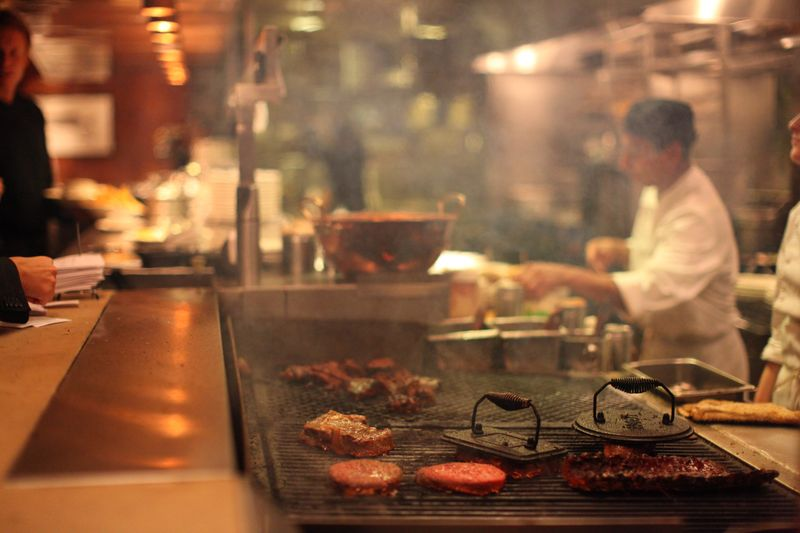

Surya started as a six-table lunch room. The recipes haven't changed — only the number of tables.

Surya opened in 2012 when founder Ramana Rao converted his family's front room into a six-table lunch counter, serving the Gongura Mutton his mother made every Sunday. Word spread through Kurnool before the sign even went up.
Today the dining room seats eighty, but the kitchen still runs on the same rule Ramana set on day one: nothing pre-mixed, nothing frozen, nothing rushed.
Surya opens as a lunch-only counter in Kurnool, seating twenty-four covers a day.
Demand for dinner biryani pushes Surya to a full-day kitchen and a proper dining room.
Ramana's daughter, Chef Deepa, takes over the curry line and expands the Guntur-hot menu.
Surya moves to a larger dining room but keeps the original wood-fired stove for its curries.
Chilies sourced directly from Guntur farms. Masala ground fresh each morning, never pre-mixed.
Recipes passed down, not reinvented. If a dish changes, it's because a grandmother told us to fix it.
Every table gets the same attention — regulars and first-timers, lunch rush or last seating.
Our cooks apprentice for a full year on the curry line before touching the biryani pots — Chef Meena's rule, inherited from her father. It's why the heat is consistent, plate after plate.
See the Kitchen →